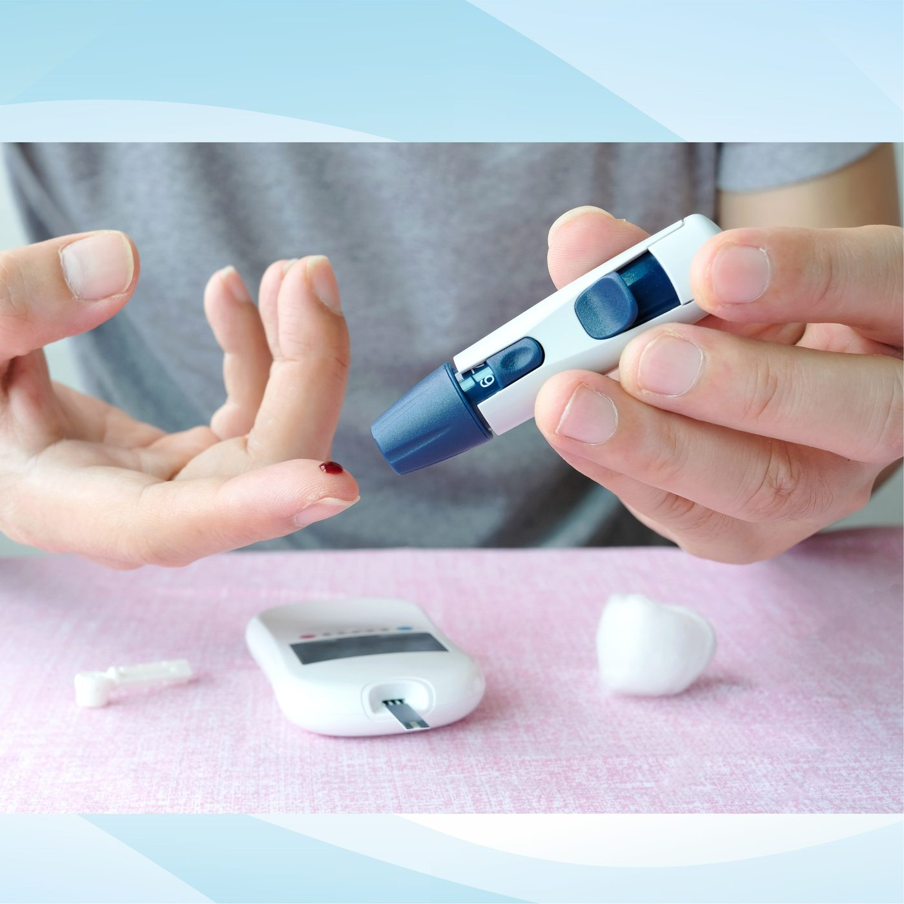

Signes précoces du diabète à ne pas ignorer
Le diabète de type 2 se développe souvent discrètement sur des mois, voire des années, avant d'être diagnostiqué — c'est précisément pourquoi il est important de reconnaître les signes précoces.
Signes à surveiller
- Une soif inhabituelle qui ne disparaît pas
- Des envies fréquentes d'uriner, surtout la nuit
- Une fatigue ou une perte de poids inexpliquée
- Une vision floue
- Des coupures qui cicatrisent lentement ou des infections récurrentes
Aucun de ces signes pris isolément n'est nécessairement alarmant, mais plusieurs réunis — ou l'un d'entre eux persistant plus de deux semaines — mérite d'être vérifié.
Pourquoi cela passe souvent inaperçu
De nombreuses personnes n'ont aucun symptôme au stade précoce, car la glycémie peut augmenter assez progressivement pour que le corps s'y adapte. C'est pourquoi le dépistage régulier est important même en se sentant en bonne santé — en particulier en cas d'antécédents familiaux de diabète, de surpoids, après 40 ans, ou en cas d'hypertension. Maurice a l'un des taux de diabète les plus élevés au monde, ce qui concerne de nombreuses familles locales, et non une exception rare.
En quoi consiste le dépistage
Confirmer ou écarter un diabète repose généralement sur une simple prise de sang — glycémie à jeun ou HbA1c — avec des résultats disponibles rapidement. Un dépistage précoce permet de commencer le traitement avant que des complications touchant les yeux, les reins, les nerfs ou le cœur n'aient eu le temps de se développer.
Si l'un de ces symptômes vous semble familier, ou si vous n'avez simplement pas été dépisté depuis un moment, il est préférable de prendre rendez-vous plutôt que d'attendre.
Une question sur vos propres symptômes ? Contactez-nous directement.
Écrire sur WhatsAppCet article fournit des informations générales sur la santé et ne remplace pas une consultation médicale. En cas d'urgence médicale, appelez le SAMU (114) ou rendez-vous à l'hôpital le plus proche.